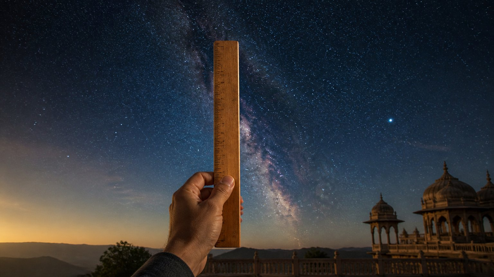
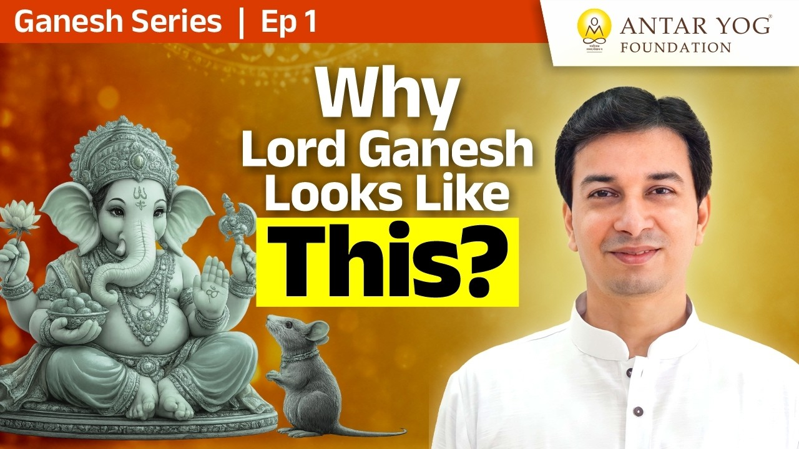

क्या आपने कभी यह सवाल पूछा?
कितने लोगों ने ऐसा हाथी देखा है जो मनुष्य की तरह चलता हो? और कितने हाथी चूहे की सवारी करते हैं?
ये सवाल अजीब लग सकते हैं, पर यहीं से समझ की शुरुआत होती है। गणपति का रूप वास्तविक है या प्रतीकात्मक (symbolic)? यह रूप किसी कारण से दिया गया था, पर हमने उस कारण को कभी समझा ही नहीं।
सोचिए, आपका बच्चा पूछे: "माँ, ये गणपति हाथी कैसे हो गए? और वे चूहे पर कैसे बैठते हैं? चूहा दब क्यों नहीं जाता?" आपके पास क्या उत्तर होगा?
क्या यह सवाल कभी आपके अपने मन में आया?
हर देवता के हाथ में कुछ है, क्यों?
देवी के छह, आठ, यहाँ तक कि अठारह हाथ होते हैं। विष्णु जी के हाथों में शंख, चक्र और गदा हैं। सरस्वती के हाथ में वीणा है। और गणपति का वर्णन इस प्रकार है:
एकदन्तं चतुर्हस्तं पाशमङ्कुशधारिणम्।
रदं च वरदं हस्तैर्बिभ्राणं मूषकध्वजम्॥
"एक दाँत, चार हाथ, हाथों में पाश (फंदा) और अंकुश (हाथी को साधने का औज़ार), वरमुद्रा, और ध्वजा पर मूषक।"
(गणपति अथर्वशीर्ष)
कुछ लोग कहते हैं कि अगर भगवान हमारे जैसे दिखते तो लोग उनकी पूजा न करते। पर बात इतनी सीधी नहीं है। ये प्रतीक हैं, और आचार्य जी कहते हैं कि जब तक हम यह प्रतीकात्मकता नहीं समझेंगे, तब तक भक्ति अंधश्रद्धा (blind faith) ही रहेगी।
मूर्ति: बाहर नहीं, भीतर की ओर एक द्वार
हम किसी पत्थर या चित्र को मान लेते हैं कि यह हमें कुछ लाकर देगा। पर बाहर से कुछ नहीं आता। आचार्य जी बताते हैं कि बाहर की मूर्ति एक माध्यम होती है, हमारे अंदर के परमात्मा को जागृत करने के लिए।
कितनों को आज तक मूर्ति से सीधा उत्तर मिला और काम बन गया? कोई बीस-पच्चीस साल पहले मूर्तियों के दूध पीने जैसा चमत्कार सुना गया था। पर यह रोज़ की बात नहीं है।
गणेश ओंकार-स्वरूप हैं, पर ॐ है क्या?
उपनिषदों में गणेश को ओंकार-स्वरूप कहा गया है। हम आँखें बंद करके ॐ बोलते हैं। पर क्या ॐ केवल एक शब्द है?
जब कहा गया है कि गणेश ओंकार हैं, तो पहले यह समझना होगा कि ॐ वास्तव में क्या है।
अथर्वशीर्ष में हाथी कहाँ है?
बहुत से लोग गणेश अथर्वशीर्ष का पाठ करते हैं, उसके सहस्रावर्तन (हज़ार बार पाठ) करते हैं। पर उसका अर्थ?
त्वं ब्रह्मा त्वं विष्णुस्त्वं रुद्रस्त्वमिन्द्रस्त्वमग्निस्त्वं वायुस्त्वं सूर्यः...
"तुम ही ब्रह्मा, विष्णु, रुद्र, इंद्र, अग्नि, वायु और सूर्य हो।"
(गणपति अथर्वशीर्ष)
पर "तुम हाथी हो", ऐसा कहीं नहीं लिखा। तो हाथी के रूप का इस स्तुति से क्या संबंध है?
सीमित पट्टी से अनंत नहीं मापा जा सकता
यहाँ साकार (रूप वाला) और निराकार (रूप से परे) दोनों की उपासना सिखाई जाती है, और दोनों जुड़े हुए हैं।
हमारा शरीर सीमित (finite) है। जो हम देखते हैं, उसकी सीमा है। जो सुनते हैं, उसकी भी सीमा है।
अब सोचिए: किसी सीमित पट्टी या माप के औज़ार से क्या आप अनंत को माप सकते हैं? कभी नहीं।
परम तत्त्व (परम सत्य) निराकार है, अनंत है। अनंत को देखा नहीं जा सकता, किसी सीमित वस्तु से छुआ नहीं जा सकता।

इसलिए ऋषियों ने हमें एक रूप दिया
असली पूजा तो उस अनंत की होनी है, पर हम वह नहीं कर पाते। इसलिए ऋषि-मुनियों ने एक सीमित रूप दिया, क्योंकि सीमित सीमित को देख सकता है, साकार साकार को।
एक सादा या गोल पत्थर भी रखा जा सकता था। पर उसे हाथ, पैर, हाथी का सिर दिया गया, ताकि परम तत्त्व का वर्णन हो सके। इसलिए हर हाथ, हर वस्तु और हर वाहन का कोई अर्थ है।
और यह सब बाहर नहीं है। यह तुम्हारे भीतर के गुणों की बात है। शिवजी, पार्वती और गणेश, सब तुम्हारे भीतर हैं।
आप जिस रूप की पूजा करते हैं, वह आपके भीतर किस गुण की ओर इशारा करता है?
इतने मोदक, फिर भी विघ्न क्यों?
इतने मोदक, इतनी दूर्वा, इतने लाल फूल चढ़ते हैं। तो भारत में कोई विघ्न आना ही नहीं चाहिए था।
फिर भी हमारे देश का खुशहाली सूचकांक सबसे नीचे वालों में है, और भारत को मधुमेह की राजधानी कहा जाता है। अगर सब कुछ इतना पवित्र और ठीक चल रहा है, तो ऐसा क्यों?
मुख्य बातें
- गणपति का हाथी रूप और चूहे की सवारी प्रतीक हैं, इन्हें समझे बिना भक्ति अंधश्रद्धा बन जाती है।
- हर देवता के हाथों की वस्तुओं और वाहनों का एक अर्थ है।
- मूर्ति एक माध्यम है, भीतर के परमात्मा को जगाने के लिए; बाहर से कुछ नहीं आता।
- गणेश ओंकार-स्वरूप हैं, और ॐ को समझना आवश्यक है।
- सीमित साधन से अनंत को नहीं मापा जा सकता, इसलिए ऋषियों ने साकार रूप दिया।
- शिव, पार्वती और गणेश सब हमारे भीतर के गुणों की बात करते हैं।
